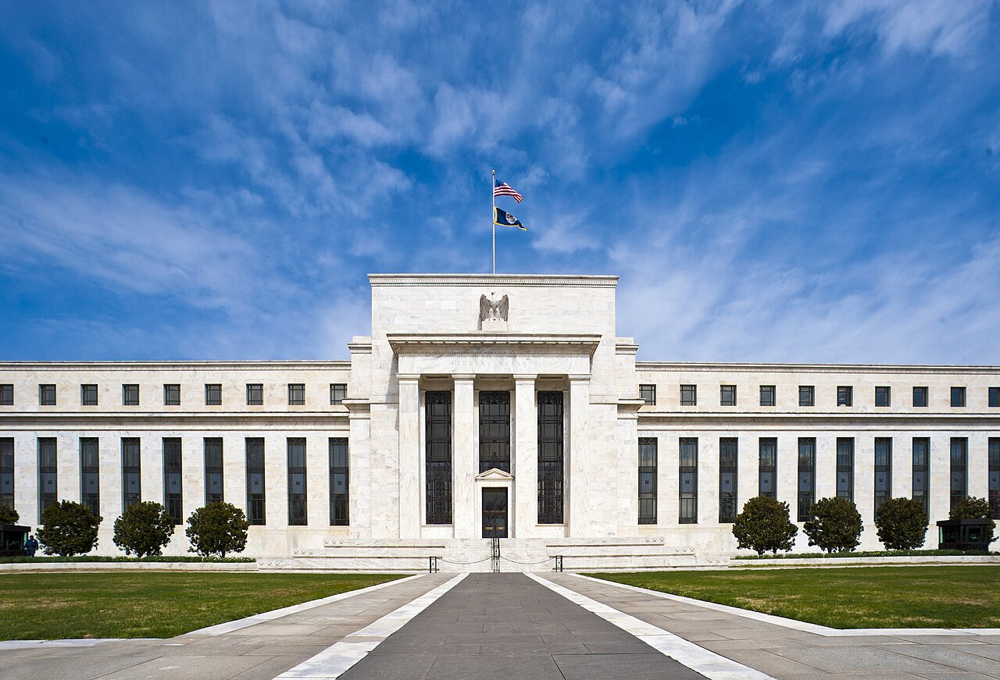

GRIEVANCE VII ◆ INSTITUTIONAL INDEPENDENCE
He has pressed the independent guardians of monetary policy with threats of official investigation.
THE RECORD SHOWS
The Justice Department’s criminal probe of Federal Reserve chair Jerome Powell was blocked after a judge deemed the subpoenas an improper attempt to influence interest rates.

Trump repeatedly urged the central bank to lower rates. Powell said a criminal-investigation threat concerning a costly renovation was intended to influence monetary decisions, a claim the administration disputed. In March 2026, a judge blocked the subpoenas; the government vowed to appeal and later dropped the case. Oversight of public construction spending is legitimate, but central-bank independence protects monetary policy from direct political coercion.
A DOCUMENTED SEQUENCE
3 MILESTONES- January 2026Jerome Powell reported a criminal-investigation threat connected with the Fed headquarters renovation.
- March 2026A federal judge blocked subpoenas after finding improper pressure on the central bank.
- April 2026The Justice Department dropped the case after the confrontation over interest rates.